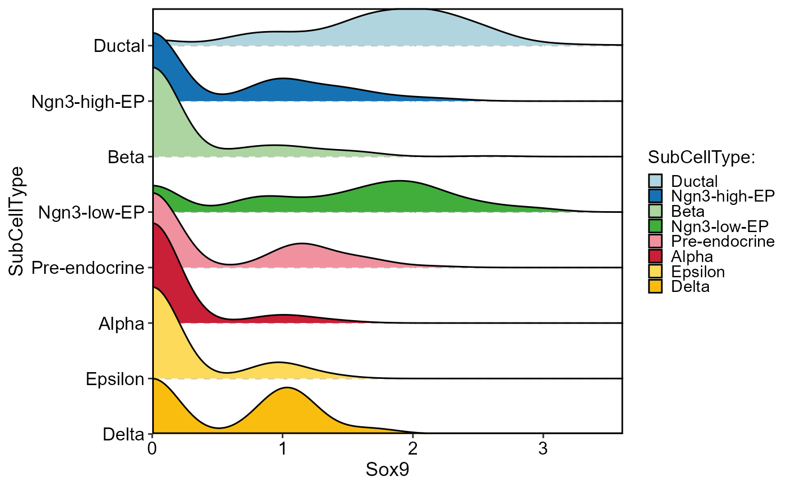
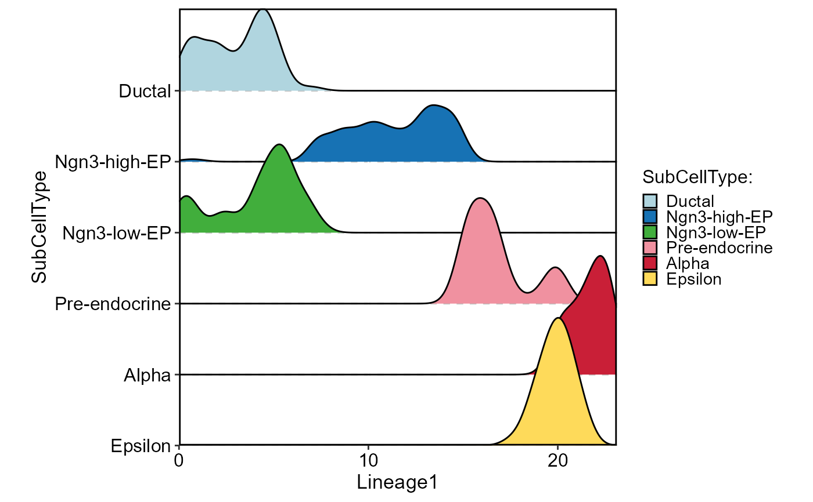
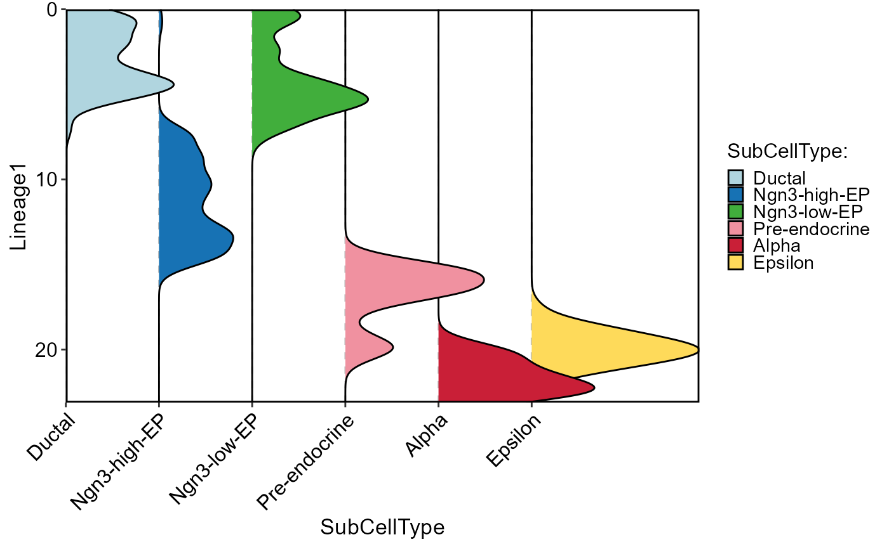

Feature density by group.
Usage
CellDensityPlot(
object,
features,
group.by = NULL,
split.by = NULL,
assay = NULL,
layer = "data",
flip = FALSE,
reverse = FALSE,
x_order = c("value", "rank"),
decreasing = NULL,
palette = "Chinese",
palcolor = NULL,
cells = NULL,
keep_empty = FALSE,
y.nbreaks = 4,
y.min = NULL,
y.max = NULL,
same.y.lims = FALSE,
aspect.ratio = NULL,
title = NULL,
subtitle = NULL,
legend.position = "right",
legend.direction = "vertical",
theme_use = "theme_scop",
theme_args = list(),
combine = TRUE,
nrow = NULL,
ncol = NULL,
byrow = TRUE,
force = FALSE,
verbose = TRUE,
srt = NULL
)Arguments
- object
A
Seuratobject.- features
Features to plot.
- group.by
Metadata column(s) used to color cells.
- split.by
Metadata column to facet by.
- assay
Assay to use.
NULLuses the default assay.- layer
Assay layer to use.
- flip, reverse
Flip the x-axis or reverse the y-axis.
- x_order
"value"or"rank".- decreasing
Order groups decreasingly.
- palette, palcolor
Palette name (thisplot::show_palettes) or custom colors.
- cells
Cell names to include.
NULLuses all cells.- keep_empty
Keep empty groups.
- y.nbreaks, y.min, y.max
Y-axis breaks and limits.
NULLlimits are automatic.- same.y.lims
Share y-axis limits across panels.
- aspect.ratio
Panel aspect ratio.
- title
Plot title.
NULLhides the title for merged/single panels. When multiple lineages are plotted andtitleisNULL, each panel is titled with its lineage column.- subtitle
Plot subtitle.
- legend.position
Legend placement (
"none","left","right","bottom","top"), direction, and title.legend.title = NULLuses the group name.- legend.direction
Legend direction:
"horizontal"or"vertical".- theme_use, theme_args
Theme name or function, plus extra theme arguments.
- combine, nrow, ncol, byrow
Combine plots with patchwork.
combine = FALSEreturns a list of ggplots.- force
Draw even when there are more than 50 features.
- verbose
Whether to print messages.
- srt
Deprecated alias for
object; supply exactly one of the two. It will be removed in scop 1.0.0.
Examples
Examples executed on 2026-10-18 from SCOP main commit 85224cf39.
data(pancreas_sub)
pancreas_sub <- RunStandardWorkflow(pancreas_sub)
#> i [2026-10-18 09:01:52] Start standard processing workflow...
#> i [2026-10-18 09:01:52] Checking a list of <Seurat>...
#> ! [2026-10-18 09:01:53] Data 1/1 of the `srt_list` is "unknown"
#> Warning: Data 1/1 of the `srt_list` is "unknown"
#> i [2026-10-18 09:01:53] Perform `NormalizeData()` with `normalization.method = 'LogNormalize'` on 1/1 of `srt_list`...
#> i [2026-10-18 09:01:53] Perform `FindVariableFeatures()` on 1/1 of `srt_list`...
#> i [2026-10-18 09:01:53] Use the separate HVF from `srt_list`
#> i [2026-10-18 09:01:53] Number of available HVF: 2000
#> i [2026-10-18 09:01:53] Finished check
#> i [2026-10-18 09:01:53] Perform `ScaleData()`
#> i [2026-10-18 09:01:53] Perform pca linear dimension reduction
#> i [2026-10-18 09:01:54] Use stored estimated dimensions 1:23 for Standardpca
#> Warning: package 'future' was built under R version 4.5.3
#> i [2026-10-18 09:01:54] Perform `Seurat::FindClusters()` with `cluster_algorithm = 'louvain'` and `cluster_resolution = 0.6`
#> i [2026-10-18 09:01:54] Reorder clusters...
#> i [2026-10-18 09:01:55] Skip `log1p()` because `layer = data` is not "counts"
#> i [2026-10-18 09:01:55] Perform umap nonlinear dimension reduction
#> v [2026-10-18 09:01:59] Standard processing workflow completed
CellDensityPlot(
pancreas_sub,
features = "Sox9",
group.by = "SubCellType"
)
#> Picking joint bandwidth of 0.209

pancreas_sub <- RunSlingshot(
pancreas_sub,
group.by = "SubCellType",
reduction = "UMAP"
)
#> Warning: Removed 2 rows containing missing values or values outside the scale range
#> (`geom_path()`).
#> Warning: Removed 2 rows containing missing values or values outside the scale range
#> (`geom_path()`).
 CellDensityPlot(
pancreas_sub,
features = "Lineage1",
group.by = "SubCellType",
aspect.ratio = 1
)
#> Picking joint bandwidth of 0.564
CellDensityPlot(
pancreas_sub,
features = "Lineage1",
group.by = "SubCellType",
aspect.ratio = 1
)
#> Picking joint bandwidth of 0.564

CellDensityPlot(
pancreas_sub,
features = "Lineage1",
group.by = "SubCellType",
flip = TRUE
)
#> Picking joint bandwidth of 0.564
